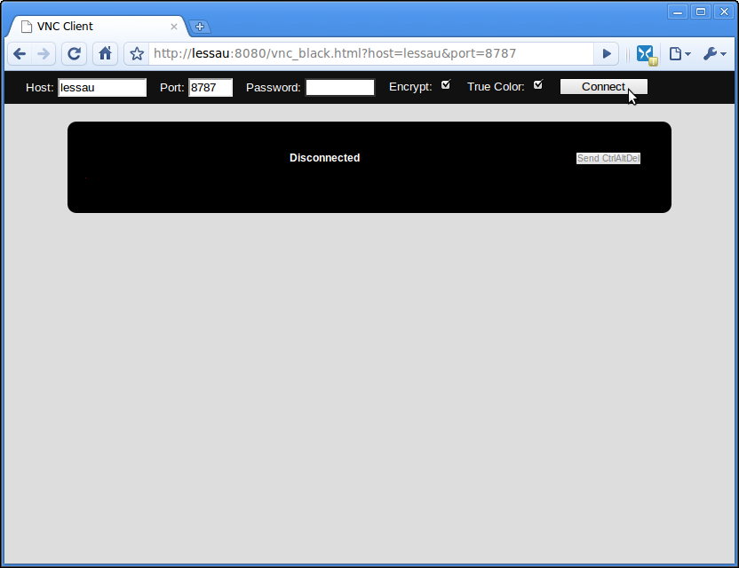
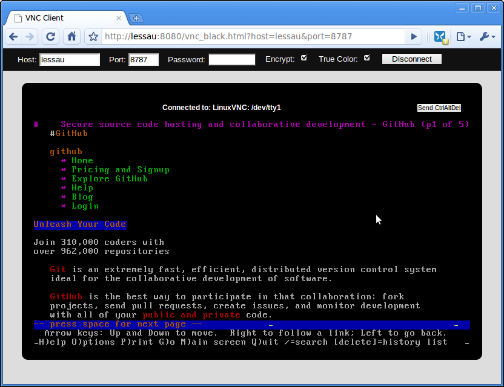

noVNC is designed to be easily integrated into other websites
so my focus is on function with minimal fluff. So yes, my
screenshots are pretty boring. If you have a cool shot of noVNC in
action, put it on flickr (or wherever) and let
me know and if
I like it I'll add it here.
A very quick 42 second demo.
A longer (2:14) demo that shows downloading the noVNC repository, installing tightvncserver, creating an SSL certificate, and some of the noVNC settings that are available.
The default (boring) style. After loading noVNC before connecting to anything.
noVNC is connected to Xtightvnc running a Ubuntu Gnome desktop with
firefox, gnomine, gnome-terminal, and AisleRiot/sol (Klondike). Yes,
that's firefox running "inside" of Chrome.

noVNC using the black styling from
Kevin Chan. Not connected.

noVNC using the black style. Connected to tty1 via linuxvnc
(exports a tty/console to VNC clients). The console has github loaded
in lynx. The glitching near the bottom is due to
linuxvnc.